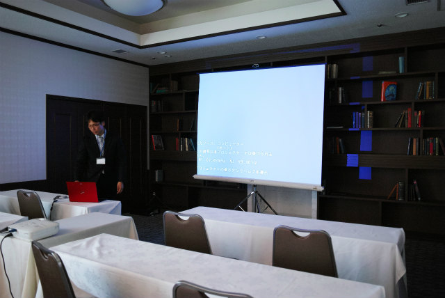
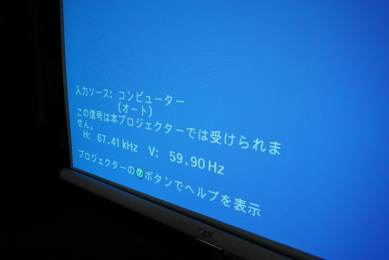
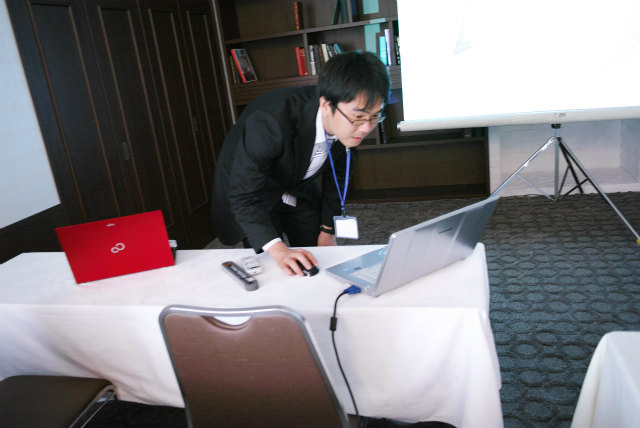
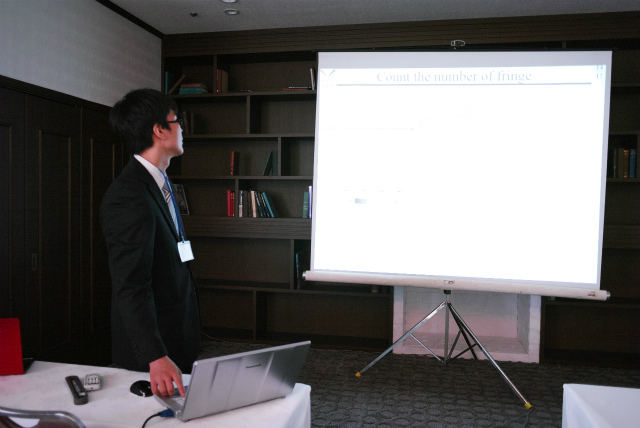
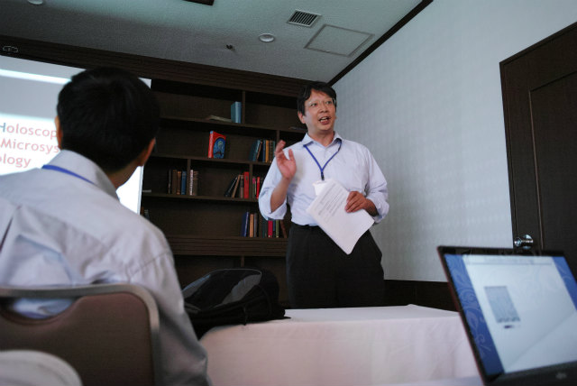
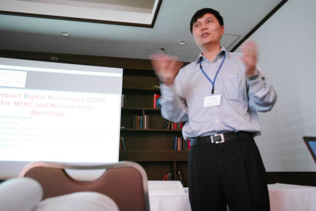
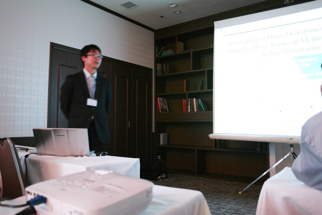
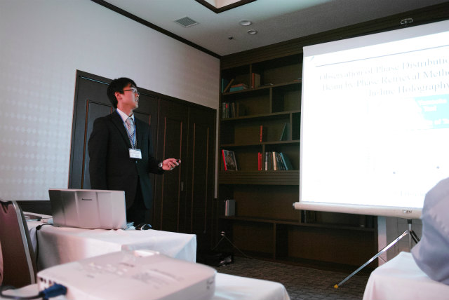
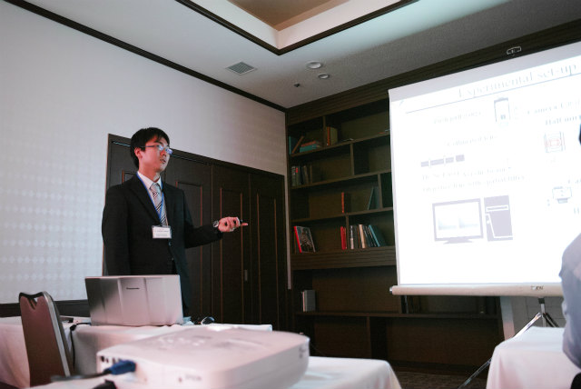

| ・ ATEM'15: International Conference on Advanced Technology in Experimental Mechanics 2015 @ Toyohashi (H27.10.04-08) | |||
"Observation of Phase Distribution in a Loaded Beam by Phase Retrieval Method for Digital In-line Holography"という題目でB4のY岡くんが発表しました．助教曰く3×3教育に移行したので，発表回数も3倍ということじゃないの？ということだそうです．当然人生初の学会発表ですが，英語口頭発表です．これもSGUになったのなら当然ということです．発表は練習していったので時間内でした．質疑応答は最後まで答えようとコミュニケーションはとれていました．初めての発表にしては上々とのこと． |
|||
|

HDMIを変換コネクタ通しても映らない |

いろいろ手を尽くしたけどダメ | ||
|

助教の人PC |

役だった模様 | ||
|

オーガナイザーは福井大の藤垣先生 |

座長はSCEのQian先生 | ||
|

スタート |

なんか独特のテンポ | ||
|

とにかく答えようと頑張ってた |
定番写真 | ||
|
サラリーマン的反省会 |
次（可視化が同じ週に）があるさ | ||
|
焼き鳥 |
名古屋コーチン | ||